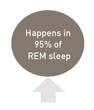
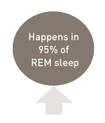
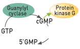
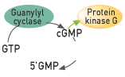
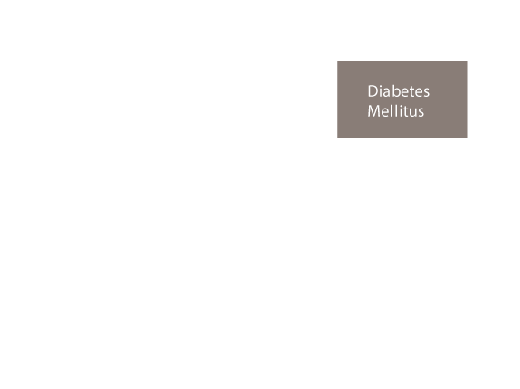

CIATRG02201600392

Total Duration : 00:00
- Guyton AC, Hall JE. Textbook of Medical Physiology.; 2006. doi:10.1136/pgmj.51.599.683-c.
- Gordon M. Stem cells and haemopoiesis. In: Hoffbrand V, Catovsky D, Tuddenham E, eds. Postgraduate Haematology. 5th ed. Massachusetts: Blackwell Publishing; 2005:1-11.
- Diez-Silva M, Dao M, Han J, Lim C-T, Suresh S. Shape and Biomechanical Characteristics of Human Red Blood Cells in Health and Disease. MRS Bull. 2010;35(5):382-388. Available at: http://www.pubmedcentral.nih.gov/articlerender.fcgi?artid=2998922&tool=pmcentrez&rendertype=abstract. Accessed June 25, 2015.
- Barrett KE, Barman SM, Boitano S BH. Ganong’s Review of Medical Physiology. 23rd ed. The McGraw-Hill Companies, Inc.; 2010.
- Lodish H, Jacobsen M. Regulation of hemoglobin synthesis. Equal rates of translation and termination of α- and β-globin chains. J. Biol. Chem. 1972;247(11):3622-9. Available at: http://www.jbc.org/content/247/11/3622.abstract. Accessed March 23, 2015.
- Benz E. Disorders of Hemoglobin. In: Longo D, Fauci A, Kasper D, Hauser S, Jameson J, Loscalzo J, eds. Harrison’s Principles of Internal Medicine. 18th ed. The McGraw-Hill Companies, Inc.; 2012:852-861.
- Adamson A. Iron Deficiency and Other Hypoproliferative Anemias. In: Longo D, Fauci A, Kasper D, Hauser S, Jameson J, Loscalzo J, eds. Harrison’s Principles of Internal Medicine. 12th ed. McGraw Hill; 2012:844-851.
- Normal Iron Absorption and Storage. Cent. Dis. Control Prev. Available at: http://www.cdc.gov/ncbddd/hemochromatosis/training/pathophysiology/iron_cycle_popup.htm. Accessed April 15, 2015.
- Kumar V, Abbas A, Aster J, eds. Robbin’s Basic Pathology. 9th ed. Philadelphia: Elsevier Saunders; 2013.
- Waldvogel-Abramowski S, Waeber G, Gassner C, et al. Physiology of iron metabolism. Transfus. Med. hemotherapy Off. Organ der Dtsch. Gesellschaft fur̈ Transfusionsmedizin und Immunham̈atologie 2014;41(3):213-21. doi:10.1159/000362888.
- Kapoor SA and RK. Iron Metabolism. 2012. doi:10.5772/39031.
- Andrews N. Disorders of iron metabolism. N. Engl. J. Med. 1999;341(26):1986-95. doi:10.1056/NEJM199912233412607.
- Patel M, Ramavataram DVSS. Non Transferrin Bound Iron: Nature, Manifestations and Analytical Approaches for Estimation. Indian J. Clin. Biochem. 2012;27(4):322-332. doi:10.1007/s12291-012-0250-7.
- Breuer W, Ronson A, Slotki IN, Abramov A, Hershko C, Cabantchik ZI. The assessment of serum nontransferrin-bound iron in chelation therapy and iron supplementation. Blood 2000;95(9):2975-82. Available at: http://www.ncbi.nlm.nih.gov/pubmed/10779448. Accessed June 25, 2015.
- Siddique A, Kowdley K V. Review article: the iron overload syndromes. Aliment. Pharmacol. Ther. 2012;35(8):876-93. doi:10.1111/j.1365-2036.2012.05051.x.
- Iron Chelation Therapy. Aplastic Anemia MDS Int. Found. 2011. Available at: http://www.aamds.org/node/82. Accessed June 29, 2015.
- Gao X, Campian JL, Qian M, Sun X-F, Eaton JW. Mitochondrial DNA damage in iron overload. J. Biol. Chem. 2009;284(8):4767-75. doi:10.1074/jbc.M806235200.
- Dimitriou E, Kairis M, Sarafidou J, Michelakakis H. Iron overload and kidney lysosomes. Biochim. Biophys. Acta 2000;1501(2-3):138-48. Available at: http://www.ncbi.nlm.nih.gov/pubmed/10838187. Accessed June 25, 2015.
- Olivieri NF, Brittenham GM. Iron-chelating therapy and the treatment of thalassemia. Blood 1997;89(3):739-61. Available at: http://www.ncbi.nlm.nih.gov/pubmed/9028304. Accessed June 25, 2015.
- Batts KP. Iron overload syndromes and the liver. Mod. Pathol. 2007;20 Suppl 1:S31-9. doi:10.1038/modpathol.3800715.
- Cappellini M-D, Cohen A, Eleftheriou A, Piga A, Porter J, Taher A. Iron Overload. 2008. Available at: http://www.ncbi.nlm.nih.gov/books/NBK173958/. Accessed June 26, 2015.
- Schaefer RM, Schaefer L. Iron monitoring and supplementation: how do we achieve the best results? Nephrol. Dial. Transplant 1998;13 Suppl 2:9-12. Available at: http://www.ncbi.nlm.nih.gov/pubmed/9566484. Accessed June 25, 2015.
- Angelucci E, Brittenham GM, McLaren CE, et al. Hepatic iron concentration and total body iron stores in thalassemia major. N. Engl. J. Med. 2000;343(5):327-31. doi:10.1056/NEJM200008033430503.
- Castruita M, Saito M, Schottel PC, et al. Overexpression and characterization of an iron storage and DNA-binding Dps protein from Trichodesmium erythraeum. Appl. Environ. Microbiol. 2006;72(4):2918-24. doi:10.1128/AEM.72.4.2918-2924.2006.
- Wood JC. Diagnosis and management of transfusion iron overload: The role of imaging. Am. J. Hematol. 2007;82(S12):1132-1135. doi:10.1002/ajh.21099.
- Brittenham GM, Badman DG. Noninvasive measurement of iron: report of an NIDDK workshop. Blood 2003;101(1):15-9. doi:10.1182/blood-2002-06-1723.
- Alústiza Echeverría JM, Castiella A, Emparanza JI. Quantification of iron concentration in the liver by MRI. Insights Imaging 2012;3(2):173-80. doi:10.1007/s13244-011-0132-1.
- Sirlin CB, Reeder SB. Magnetic resonance imaging quantification of liver iron. Magn. Reson. Imaging Clin. N. Am. 2010;18(3):359-81, ix. doi:10.1016/j.mric.2010.08.014.
- Kirk P, Roughton M, Porter JB, et al. Cardiac T2* magnetic resonance for prediction of cardiac complications in thalassemia major. Circulation 2009;120(20):1961-8. doi:10.1161/CIRCULATIONAHA.109.874487.
Welcome to first module of the EQUIP e-learning program.
Anatomy and pathophysiology of erectile dysfunction (ED)
Welcome to the first module of the EQUIP e-learning program. This program is intended to assist in maintaining skills, and enhance competencies for better outcomes in healthcare. This program is a continuing pharmacy education activity which focuses on the different aspects of erectile dysfunction and benign prostatic hyperplasia.
This module describes the anatomy and pathophysiological concepts underlying erectile dysfunction (ED).
This material is designed to be educational and non-promotional. It is offered so that the pharmacist receives accurate and important health information about the Lilly product so that the pharmacist can discuss with patients the medication consistent with the pharmacist’s professional responsibilities. By providing this information, Lilly in no way is encouraging the pharmacist to prescribe or dispense medicines without a prescription or as otherwise prohibited by law.
This material is designed to be educational and non-promotional. It is offered so that the pharmacist receives accurate and important health information about the Lilly product so that the pharmacist can discuss with patients the medication consistent with the pharmacist’s professional responsibilities. By providing this information, Lilly in no way is encouraging the pharmacist to prescribe or dispense medicines without a prescription or as otherwise prohibited by law.
Upon completion of this module you should be able to:
Understand the anatomy of penis
Recognize the physiology of erection
Define erectile dysfunction
Explain the pathophysiology of erectile dysfunction
Identify the risk factors for erectile dysfunction
Upon completion of this module you should be able to:
- Understand the anatomy of penis
- Recognize the physiology of erection
- Define erectile dysfunction
- Explain the pathophysiology of erectile dysfunction
- Identify the risk factors for erectile dysfunction
Erectile dysfunction (ED) is a complex sexual arousal disorder in men.1 It is defined as persistent or recurrent inability to achieve or maintain penile erection that is sufficient for satisfactory sexual performance. A diagnosis of ED is established if the duration of symptoms continues for a period of 3 months except in the case of trauma or surgically-induced ED.1,2
Even though ED is not considered a life-threatening condition it has a significant effect on quality of life of patients and their partners. It is also closely associated with several other conditions.3
A critical understanding of the anatomy of the penis and the physiological mechanisms underlying erection is essential to provide a clear perspective of erectile dysfunction.

The penis consists of the root, which is attached to the perineum, and the body. The tip of the penis is called the glans penis. The body of the penis is comprised of 3 masses of erectile tissue, the right corpus cavernosum, the left corpus cavernosum and the corpus spongiosum. The corpora cavernosa form most of the body of the penis and are enveloped by the tunica albuginea. The corpus spongiosum is also cylindrical erectile tissue which surrounds the urethra and is expanded at the end to form the glans. These structures get engorged with blood during sexual excitement.4
Each of the corpora cavernosa consist of several sinusoids which are larger in the centre and smaller in the periphery. The sinusoids are interconnected and are partially separated by trabeculae.5
Arterial supply to the penis is by the branches of the internal pudendal artery. The corpora cavernosa are supplied by the dorsal arteries and the deep cavernosal arteries which are located in the centre of each of the corpus cavernosum.6
The corpus spongiosum is supplied by the dorsal artery and by the artery of the bulb of the penis. Many blood vessels from the deep arteries of the penis traverse the spaces in the erectile tissues. In the relaxed state these arteries are coiled and during excitation related nerve impulses result in the uncoiling of these arteries and rapid flow of blood in to the cavernous spaces and cause the penis to become turgid.6
The venous drainage of the penis comprises of the superficial, intermediate and deep venous systems.7 The superficial system consists of veins draining in to the superficial dorsal vein.7 Small veins from the corpora cavernosa drain into small vessels in the tunica albuginea called the sub-tunical vessels which in turn drain into veins that run around the circumference of the penis and receive tributaries from the corpus spongiosum. The circumferential veins drain into the deep dorsal vein.4
This forms the intermediate venous system. The deep venous drainage system consists of the crural veins and the cavernosal veins.7 The veins of the penis play a significant role in the physiology of erection.8,9
Hemodynamic events such as increased blood flow into the sinusoids and restricted drainage of venous blood in the erectile tissues which is caused by smooth muscle relaxation in the corpora cavernosa, arterial dilation result in erection of the penis with sexual stimulation. The muscles at the root of the penis constrict and compress the veins thereby preventing drainage of blood and maintaining the erection.6
RAndomised Placebo-controlled ITP Study with Eltrombopag - RAISE
As discussed earlier penile erection is a vascular event and has 2 components which include arterial dilation and venous occlusion. There is little blood flow to the penis in the detumescent state and the smooth muscle within is in a state of contraction. Arterial and cavernosal smooth muscle relaxation results in a 20 – 40 fold increase in the blood flow to the penis. As a result the sinusoids in the corpora cavernosa get engorged with blood during erection.
As penile erection develops there is an increase in pressure on the surface of the corpora near the tunica albuginea and compresses the veins that drain blood away from the corpora. This trapping of blood increases the pressure in the cavernous tissues. This component of erection is further enhanced by the contraction of the muscles at the root of the penis which further forces blood into the erectile tissues and increases rigidity.10
 

Distinct mechanisms are involved in penile erection. These include the central psychogenic mechanism and the reflexogenic mechanism.11
The psychogenic mechanism results in erection and starts as central psychogenic stimuli generated or received in the brain in response to auditory, visual, olfactory, imaginative stimuli in the absence of physical touch. They are believed to be mediated primarily via the sympathetic thoracolumbar path, although the sacral parasympathetic system also may participate.11,12
Reflexogenic errections are elicited in response to direct stimulation of the penis. They are mediated by a spinal reflex pathway through sensory receptors in the penile skin and the glans and the dorsal nerve that joins the pudendal nerve to reach the sacral spinal cord.11,12
Another mode of penile erection is sleep erection which occurs in 95% of rapid eye movement sleep, on an average of 3 to 5 times per night and may last from 30 minutes to 60 minutes.12
 

Smooth muscle contraction, which is an important component of the physiological processes involved in penile erection, is modulated calcium binding. Intracellular calcium ion concentration is a crucial factor and is regulated by several mechanisms. The nitric oxide-cyclic GMP (NO/cGMP) pathway and the phosphodiesterase mechanisms are 2 mechanisms that have been unravelled and understood in detail.
The NO/cGMP pathway is a major regulator of smooth muscle relaxation in the penis. Nitric oxide, which may be derived from the cavernous nerves or from the endothelium lining the sinuses, initiates and maintains erection. NO activates the membrane bound enzyme guanylyl cyclase which converts GTP to cyclic GMP (cGMP) which in turn causes a cascade of events that eventually reduce the intracellular concentration of Ca2+ by increasing sequestration and extracellular transport while reducing intracellular transportation.13
Phosphodiesterases (PDEs) are a class of enzymes that degrade cyclic nucleotides such as cGMP and cAMP and the predominant type of PDE in the penile tissues is PDE5 which acts on cGMP. PDE5 breaks down cGMP to 5 prime GMP and reduces the concentration of calcium and eventually promotes flaccidity consequent to smooth muscle contraction.13
During sexual arousal inhibition of PDE5 mediated degradation of cGMP promotes increased intracellular concentrations of cyclic GMP and erection.13


ED is classified as psychogenic and organic based on the underlying cause. Psychogenic ED was earlier considered to the most common, however it is now recognized that vasculogenic ED is in fact the most common.11
Organic causes of ED may further be classified as vasculogenic, neurogenic, anatomic and endocrinological. Psychogenic ED may be generalized or situational.14
Organic causes of ED such as vascular, neurologic and hormonal abnormalities with an occasional psychogenic component may be common in older men. However, men under the age of 40 years may have psychogenic factors as the most important contributing factor for ED.15
Vasculogenic ED may be arterial, venous (cavernous) or mixed.
Peyronie’s disease
Repeated trauma to the tunica albuginea
Formation of plaque causing penile curvature
Prevalence increases with age
Vasculogenic ED may be arterial, venous (cavernous) or mixed.
The two most common vascular disorders causing ED include focal occlusion of the penile artery and Peyronie’s disease. Studies have revealed that subclinical perineal trauma, commonly seen in younger men associated with bicycling, may also cause ED. Bicycling decreases the peak systolic velocity of cavernosal artery to 0 as a result of perineal pressure from bicycle seats. This further occludes the penile blood vessels temporarily leading to focal occlusive arterial disease.15
Peyronie’s disease is thought to arise as a result of repeated trauma to the tunica albuginea leading to formation of plaque causing penile curvature. Plaque formation is time consuming and hence the prevalence of ED increases with age.15
Mechanism of arteriogenic ED involves structural changes. Arterial insufficiency leads to reduction in oxygen tension in the blood of corpus cavernosum. Formation of PGE1 and PGE2 is oxygen-dependent, hence, an increase in oxygen tension is associated with high levels of PGE2 and suppression of TGF-β1-induced collagen synthesis in the corpus cavernosum. However, a reduction in oxygen tension diminishes the cavernous trabecular smooth muscle content leading to diffuse venous leakage.14
Some of the common neurogenic causes that contribute to ED include stroke, Parkinson’s disease and multiple sclerosis. Nerve damage leading to ED can be caused by some types of physical trauma and injuries to pelvic region or spinal cord. ED is often under-recognized and under-treated among patients with dementia due to paucity of data.16
Hormonal causes of ED are uncommon in young individuals. However, low testosterone levels causing ED is seen in elder individuals.15 Few common hormonal disorders that are associated with ED include diabetes mellitus, hyper-/hypothyroidism, Klinefelter’s syndrome, etc.15
Psychogenic ED
Generalized type
Situational type

Psychogenic causes of ED include performance anxiety, fear of negative consequences, interpersonal factors and relationship factors/conflicts. The International Society of Impotence Research has proposed a new classification for psychogenic ED. According to this classification psychogenic ED is classified into generalized type and situational type.17
Generalized type of ED can be of either unresponsive type or inhibitory type. Generalized unresponsive type can be due to primary lack of sexual arousability or age-related decline in sexual arousability whereas generalized inhibitory type is due to chronic disorder of sexual intimacy.17
Situational type of ED can be partner-related, performance-related or psychogenic distress. Partner-related factors include lack of arousability and high central inhibition due to partner conflict. Performance-related factors include rapid ejaculation or fear of failure. Psychogenic distress can be due to depression or stress.17


Many medications can cause ED in men by affecting sexual arousal and sexual performance. The common medications include antihypertensives, antidepressants, antihistamines, chemotherapy, etc. Atenolol, Chlorthalidone, Enalapril, Hydrochlorothiazide, Metoprolol, Verapamil, etc are some of the antihypertensive medications that can cause ED.18
Amitriptyline, Chlorpromazine, Diazepam, Fluoxetine, Sertraline, etc are some of the antidepressants that can result in ED. Antihistamines that can cause ED include Cimetidine, Meclizine, Promethazine and Ranitidine. Chemotherapy agents such as Flutamide, Busulfan, Ketoconazole and Cyclophosphamide can cause ED in men.15,18,19
Risk factors of ED
Risk factors for ED are numerous. Individuals more than 40 years of age demonstrate an association between ED and hypertension, dyslipdemia, diabetes mellitus, coronary artery disease and metabolic syndrome. Obesity and sedentary lifestyle also contribute to ED. Recent studies have demonstrated that hypogonadism is also associated with ED.19
Modifiable risk factors for ED include smoking, lack of physical activity, obesity, excessive alcohol consumption and recreational drug use.20

Analysis of chronic diseases and its association with ED using a self-assessment questionnaire revealed increased probability of some degree of ED. Age-adjusted odds ratio of developing ED was 4.08 for patients having diabetes mellitus, 2.93 for individuals having prostatic disease, 2.6 for patients with circulatory disease, 1.82 for depressive patients, 1.79 for cardiac disease patients, 1.63 for individuals with cholesterol problems and 1.58 in the presence of hypertension.21,22
MMAS
Estimated prevalence of ED by 2025 322 million
The Massachusetts Male Aging Study (MMAS) is a community-based survey of men in the age group of 40-70 years. 52% of responders in the study reported some degree of ED. Complete ED was noticed in 10% of respondents whereas moderate ED was noticed in 25% of respondents and minimal ED in 17% of respondents. The incidence of moderate or severe ED doubled in the age group of 40-70 years.23
It is estimated that the global prevalence of ED by the year 2025 would be about 322 million and is possibly related to the ageing population and increase in risk factors.24
ED screening may signal underlying disease:
Diabetes
Hypertension
Dyslipidemia and coronary artery disease (CAD)
Depression
ED can result in:
Anxiety
Decreased self-esteem
Reduced quality of life
Negative effect on relationships
Not only are couples who are experiencing erectile dysfunction (ED) frequently burdened with significant psychological conditions, ED may also signal the presence of a more serious underlying disease.22
It is important to diagnose and treat ED as it is often associated with comorbid conditions that may not have been detected previously, such as cardiovascular disease, diabetes, and depression.22
ED-associated distress can have a serious negative impact on the patients’ overall quality of life as well as on interpersonal relationships.25
End of Module
Congratulations! You have completed this module. Please complete the post-module quiz to finish the module.
Thank You!
The masses of erectile tissue in the penis include
2 corpus spongiosa and 1 corpus cavernosum
1 corpus cavernosum, 1 corpus spongiosum
2 corpora cavernosa and 1 corpus spongiosum
1 corpus cavernosum and its surrounding tunica albugiea
The NO/cGMP pathway
Regulates intracellular Ca2+ concentration
Regulates smooth muscle relaxation in the penis
Regulates release of NO from the cavernous nerves
A and B
A and C
Which of the following is not associated with erectile dysfunction?
diabetes mellitus
Hyperthyroidism
Klinefelter’s syndrome
Hypothyroidism
None of the above
Estimated global prevalence of erectile dysfunction by 2025 is
3 million
32 million
322 million
|
Frame 0 of 00 0:00 / 0:00
|